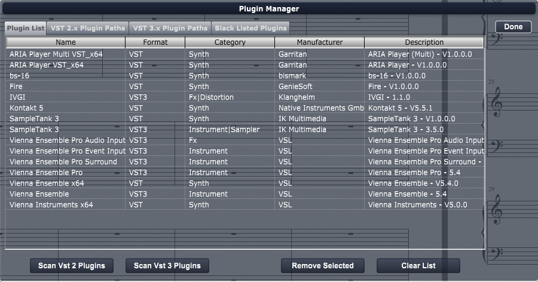

Audio/MIDI>Plugin Manager
Choose this command to enable and disable VST/AU plugins used in Overture.

When you choose the Plugin Manager Settings command, an Plugin Manager dialog box appears.
There are several elements in the MIDI Settings dialog box. These are described, below:
- Plugin List Tab - Displays a list of all plugins being used by Overture.
- VST 2.x Plugin Paths - Use this tab to set the VST 2 plugin paths to search.
- VST 3.x Plugin Paths -Use this tab to set the VST 3 plugin paths to search.
- Blacklisted - Displays a list of plugins that Overture determined not be a plugin or to function improperly.
Use the buttons to load and enable and disable plugins.
To select or deselect a plugin click any where in the row on the plugin.
- Scan VST 2 Plugins - Tells Overture to scan the VST2 paths for plugins.
- Scan VST 2 Plugins - Tells Overture to scan the VST2 paths for plugins.
- Remove Selected - Tells Overture to disable all selected plugins.
- Clear List - Tells Overture to disable all plugins in list.
Click the Done button to exit the dialog.